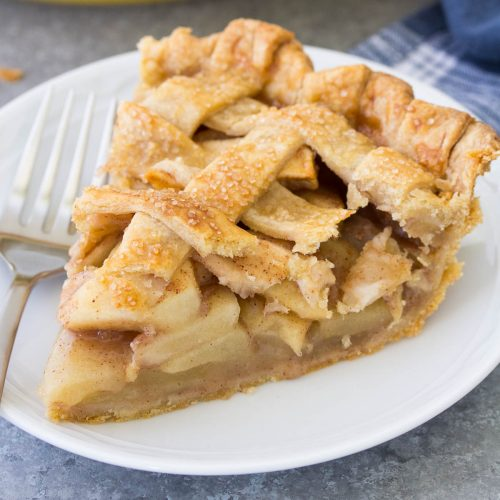

Homemade apple pie is always a good idea — and if you're looking for the best apple pie recipe of all time, you've come to the right place. Grandma Ople's recipe is one of our most popular recipes ever. Try it today to learn what all the hype is about!
You'll find a detailed ingredient list and step-by-step instructions in the recipe below, but let's go over the basics:
Ingredients
- Apples: This recipe calls for eight small Granny Smith apples.
- Butter & flour: The filling starts with butter and all-purpose flour cooked into a paste.
- Sugars: A blend of white and brown sugar creates the perfect sweet flavor with a hint of warmth.
- Pie crust: Use a store-bought double crust pie pastry or make your own at home.
Steps
Here's a very brief overview of what you can expect when you make this old-fashioned apple pie at home:
- Make the filling: On the stove, make a paste with flour and butter. Add the sugar and water and bring to a boil. Simmer, then remove from heat.
- Assemble the pie: Press one crust into a pie plate. Place the sliced apples on the bottom crust. Use the top crust to make a lattice crust according to the recipe below. Pour the butter-sugar mixture over the lattice crust.
- Bake the pie: Bake the pie in a preheated oven until the apples are soft and the crust is golden brown.
The assembled lasagna should take about 50 minutes to cook in an oven preheated to 375 degrees F. Cover it with foil for the first 25 minutes, then let it cook uncovered for the final 25 minutes. Also, it's important to let the lasagna rest at room temperature for about 15 minutes before you cut into it.